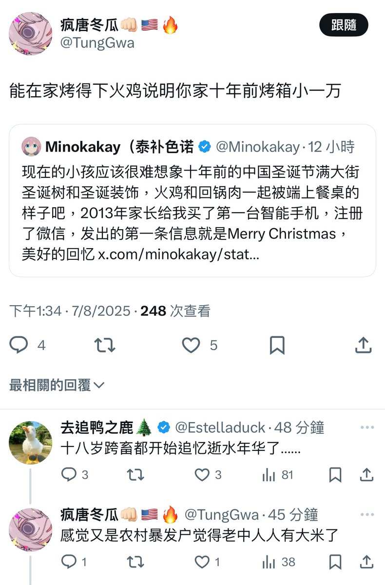

Minokakay（泰补色诺
@Minokakay
哦这次不骂我资产阶级吸血鬼了，改骂我农村暴发户了，合着就是你们2015年那会过得惨生活不如意，然后就得骂人家过得好的是吧？其他人过得好不好关我屁事，老子的钱又不是抢来的，我过得好我就要怀念十年前，怎么，你不服气？
一看都福建人，润到美国了，圣诞节还买不起只鸡吗？

Minokakay（泰补色诺
@Minokakay
我发个十年前圣诞节我家里要吃火鸡的post，立马就有傻逼老中跳出来了，说我家里肯定很有钱都能在家里安个烤箱烤火鸡了，其实十年前到了圣诞节火鸡超市里就有卖的，烤好的不到100元一只。
很多人自己小时候过了苦日子，爹妈舍不得钱不给买，长大了看到别人吃只烤鸡，就开始意淫对方是万恶的资产阶级了